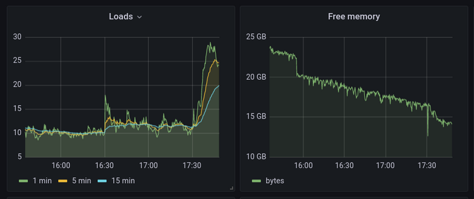

Скрипт для поиска распухших логов докера
В который раз уже сталкиваюсь с этой ситуацией. Субботнее утро, хочется немного попрокрастинировать (что при загрузке 60-70 часов в неделю просто жизненно необходимо) и тут начинают сыпаться алерты - заканчивается место на диске одного из рабочих серверов. Как всегда запускаем в tmux команду sudo ncdu -x / и ждём. Пришлось ждать минут 40, так как количество файлов на хосте действительно велико, в основном за счёт кешей npm и node modules. И опять ожидаемо обнаружилось, что несколько сотен гигабайт съели логи новых докер контейнеров, запущенных разработчиками на хосте разработки.
Про выигрыш и победу
Не так давно у нас был корпоратив. Основным гвоздём программы был яхтинг, а точнее даже "парусная регата". Происходило данное мероприятие недалеко от мыса "Стрелка" и КамГЭС, задача была достаточно простая - подойти к бую, на парусном вооружении, от него пройти до буя на противоположном берегу у мыса "Стрелка", обогнуть его и вернуться обратно за минимально возможное время. Всех участвующих разделили на 14 команд и распределили путём жребьёвки по семи яхтам в два захода. Я в числе прочих своих сослуживцев оказался на небольшой 27-ми футовой яхте "Family", познакомился со шкипером и его дочерью (крайне душевные ребята), сообщил, что в яхтенных походах уже бывал и мною могут располагать - отличаю гротофал от стаксель шкота, кранец от кракена, принёс две пары нормальных яхтенных перчаток и вообще, полезный малый.
Теги: жизненное
Про два года и сискуль

Много раз слышал о том, что чужие дети растут быстро, а свои ещё быстрее. И это похоже одна из тех вещей, о которых можно сто раз услышать, знать об этом, но понять - только прочувствовав на себе. Все эти "вот появятся свои, тогда поймёшь" - как ни удивительно, в большинстве своём правда.
Работа с GRE туннелями или история одного велосипеда

Почему периодически айтишники делают велосипеды? Ответ простой - потому что на своём велосипеде ездить удобнее. Ну кто хотя бы раз не написал свой модуль логирования для какого-нибудь языка?
Постановка задачи
На объекте есть какие-то подсети, в которых живут инженерные системы. И есть ряд хостов в датацентрах, с которых необходимо получить доступ до этих самых инженерных объектов. В качестве сетевого оборудования на объекте часто либо Cisco, либо Microtic, либо некая линуксовая машина (но на этот случай есть другие, более приятные и удобные для нас инструменты). Исторически так сложилось, что штатным для нас методом обеспечения связности являются GRE туннели) с поднятием маршрутизации в нужные подсети через конечные точки туннеля с последующим закрытием доступа файрволом по белым адресам с обеих сторон. Вопросы шифрования туннелей пока не поднимаем, это возможно будет темой для отдельной статьи.
Теги: linux, networking, shell, админское
Как понять, где слонику стало тяжело

На работе столкнулся с проблемой - судя по мониторингу резко начинает расти load average, причём увеличивается количество форков postgres и суммарная нагрузка на CPU, которую потребляет postgres начинает зашкаливать...
Небольшая проблема с софтовым рейд массивом

Преамбула банальна: Жил/был сервер с софтовым зеркалом. И вот, начинаются странные проблемы. То я фаил сохранить не могу и vim наглухо зависает, то считать что-то не могу. Полез первым делом в dmesg, а там красота нечеловеческая на два экрана, приведённая на скриншоте в заголовке.
Прогнал smartctl, написал в службу техподдержки Selectel - мол, диску похоже пришёл северный зверь из семейства куньих. Можете ли заменить диск? И вот техподдержка селектела реально порадовала - мол, да-да, конечно, ошибок смарта не видим, но заменим обязательно, напишите, когда вам удобно и т.п.. Если честно, я такой оперативности и учтивости после гуглооблака и AWS прямо не ожидал. Уточнил детали - мол, поддерживает ли диск hotswap, можно работают ли они круглосуточно и т.п..
Про переход будущего в настоящее и деградацию человеков

Как это уже не раз бывало, Костя Шагинян (привет тебе огромный) из 100+8 выложил пост, на который я начал отвечать и в процессе понял, что мой ответ лучше будет оформить в виде отдельного поста.
Костя писал про электромобили, противопоставляя их ДВС, а у меня как раз есть что рассказать по этому поводу.
Теги: auto
История одного факапа

Послушал тут предпоследний 769-й выпуск подкаста Radio-T, в котором обсуждение технических ошибок напомнило мне примерно аналогичный случай из моей практики.
Давным давно, когда я ещё работал в xsolla, которая ещё в то время носила название 2pay, у нас по большому счёту был всего один основной сервер в Московском датацентре, на котором крутился весь мир. Передо мной стояла задача написать скрипт, который зачищает старые логи, временные файлы и прочее, что может занимать много места.
Теги: shell, админское, жизненное
Про профдеформацию

Вчера мучался с настройкой сетевой связности между ЦОДом одной компании и подсетью телеком оператора на объекте. Бриджи, туннели, роутинг и вот это всё. Сегодня под утро уже приснился сон, перед тем, как жена разбудила. Решил поделиться с вами. :)
Приходим мы с женой в ЗАГС регистрировать ребёнка, а нам тётка и говорит - выдадим вам тридцатую подсеть, будет у вас четыре айпишника - адрес сети, где ребёнок с мамой прописан, широковещательный и два айпишника как раз остаются маме и ребёнку.
Я: - Эй, а я? А как же я?
Тётка: - А что ты? Много ты участия в этом процессе принимал? Она его вынашивала, рожала, ночами не спит. Может вам 29ю подсеть выделить? Куда ещё 3 адреса денете? Я не верю, что вы четверо детей планируете, а с адресами у нас и так дефицит. Ничего, за натом посидишь, сам себе там подсеть выдели серую, найдёшь оборудование.
На этом моменте я проснулся.
Теги: fun, networking